Fall Session 2026
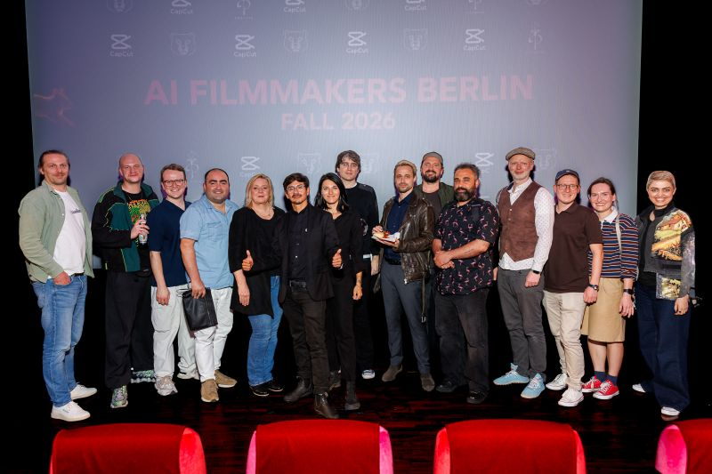
AI filmmaking belongs on the BIG screen. What a NIGHT!
Our first AI Filmmakers Berlin cinema session.
This time I wanted to bring as many voices as possible.
Three blocks, verticals and horizontals, shorts and series, humor, drama, poetry, commercial and experimental work. As diverse as the people behind it.
And seeing this work in a real cinema changes a lot.
Images land differently.
Sound has another weight.
Pacing takes on a new rhythm.
BUT some things DID NOT change:
As always: THIS is about INTENT. Across the program, you could feel a clear artistic voice behind every work.
If anyone still thinks AI filmmaking is only about tech and automation, they should spend an evening in a room like this.
We also had a workflow presentation by taktlos Kenny Márioy Ludger Brechmann and a completely PACKED cinema. Every seat taken, people standing at the back, our second Audience Award won by Mark Wachholz, and lots of conversations afterwards.
Films by
Farzin Raisstousi, Albert Bozesan, Mark Wachholz, Shamila Lengsfeld, Simon Meyer, Ariane Gebhardt, Markus Laukkanen, Milad Mesof, Bernhard Ensomo, Adrian Daniel Botnariu, Jan Grastorf, Esther Gronenborn, Seb Ungrad
Thank you to everyone who submitted, screened, came, exchanged ideas and made the evening what it was.
A huge thank you to CapCut Marc Brüser Dina Sameni and the whole team for making this edition possible and coming over from the UK and to PROMPTR for the support.
And of course special thanks to for Alexander Wüst, Daniel Partzsch, Katka Nagyova, Peer Gopfrich, Elham Maddah, Milad Mesof for all the help behind the scenes!
Looking forward to more stories, more perspectives, and to seeing how new ways of making films are changing the landscape and what all of this means on a human level.
Very happy to have started AI Filmmakers Berlin and to see where this community is taking it.
Photographer: Gerome Defrance
Thankful.
Gallery
Our second Audience Award
The audience voted again, and the Fall 2026 Audience Award went to Mark Wachholz.
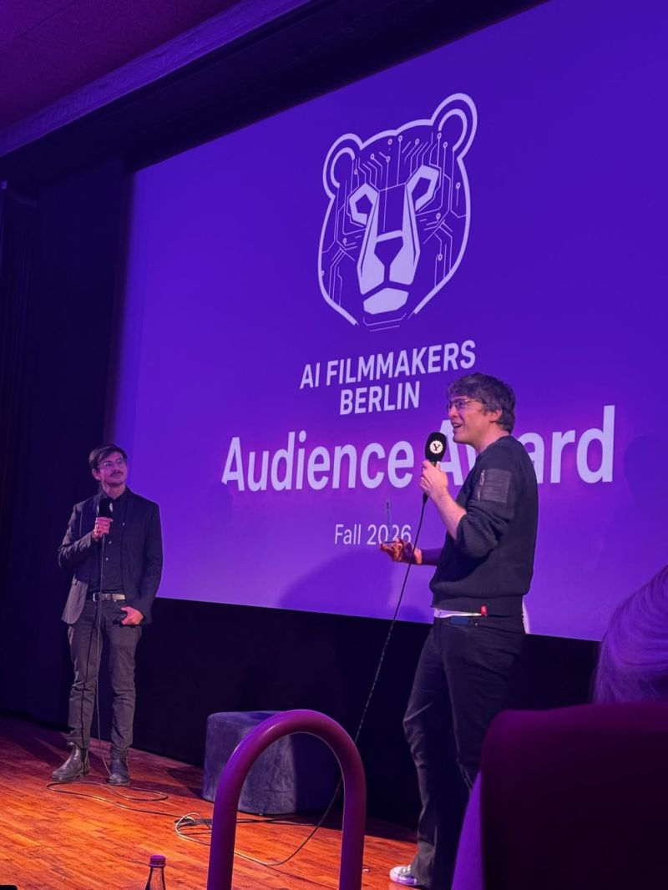
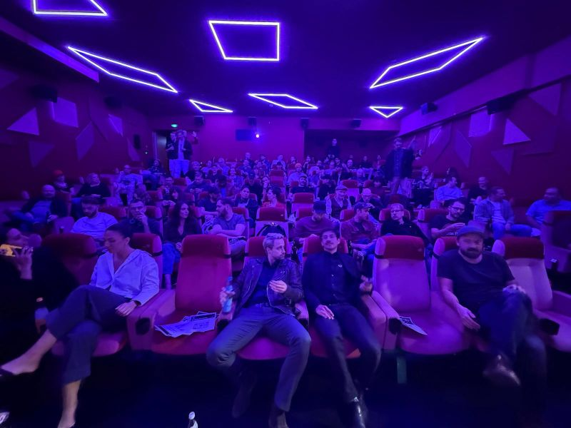
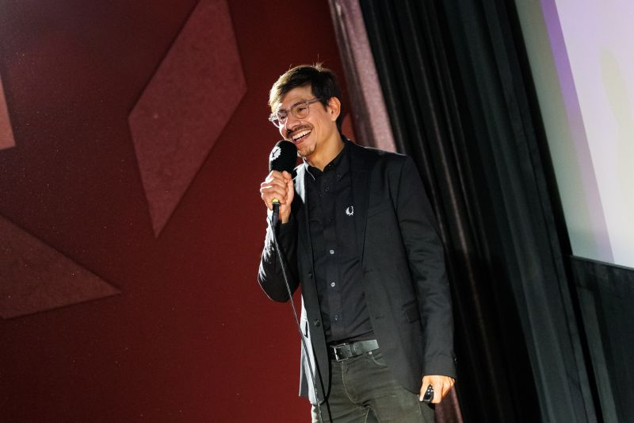
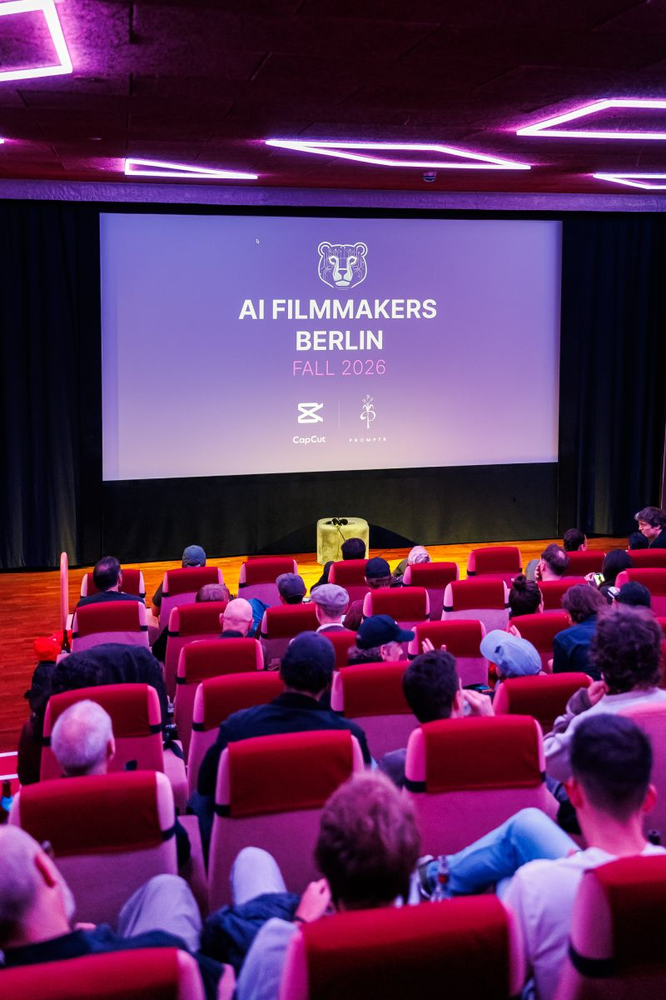
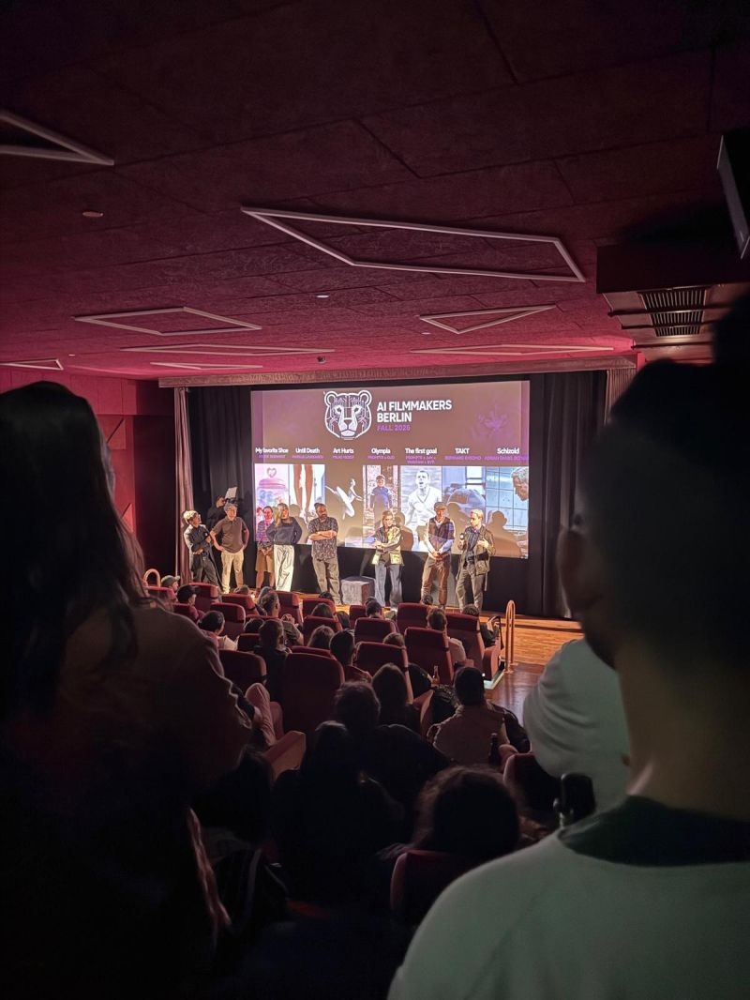
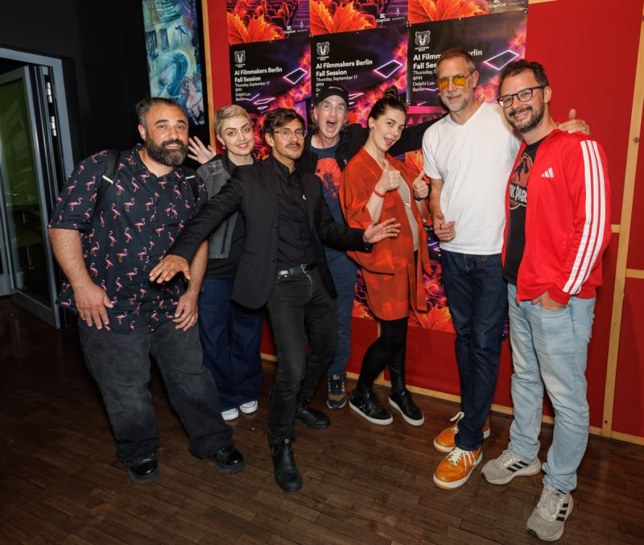
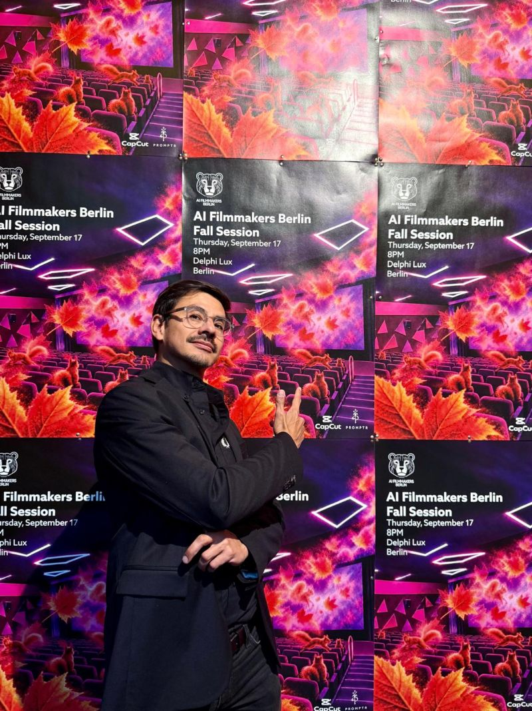
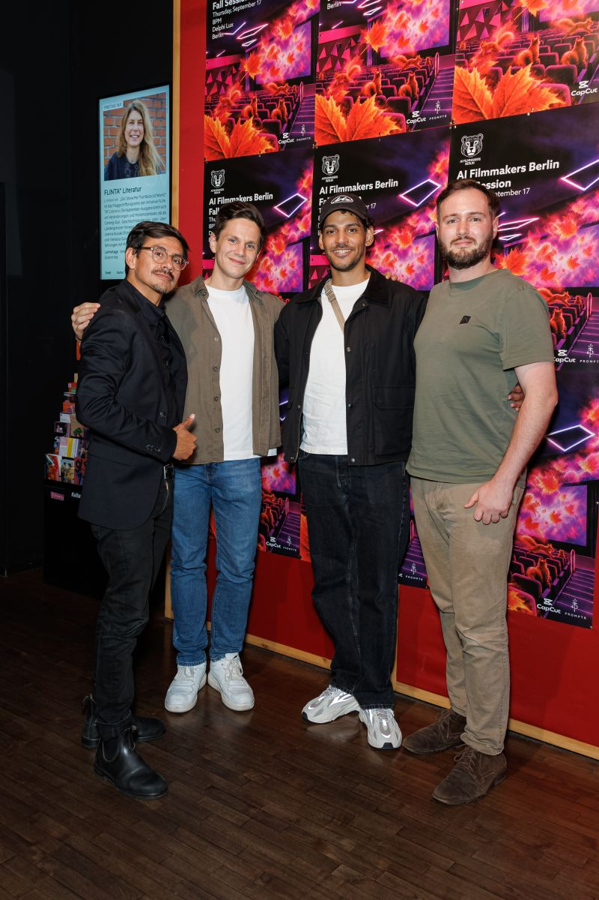
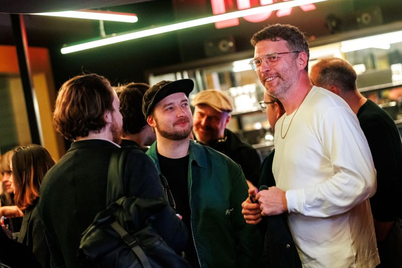
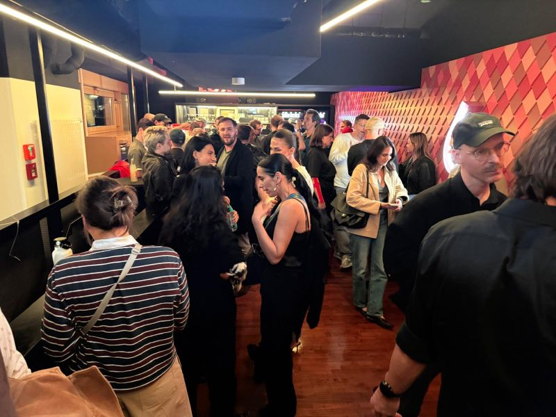
Event photography: Gerome Defrance
Read Ben Chimoy’s full LinkedIn post
Curated by Ben Chimoy
Founder, AI Filmmakers Berlin